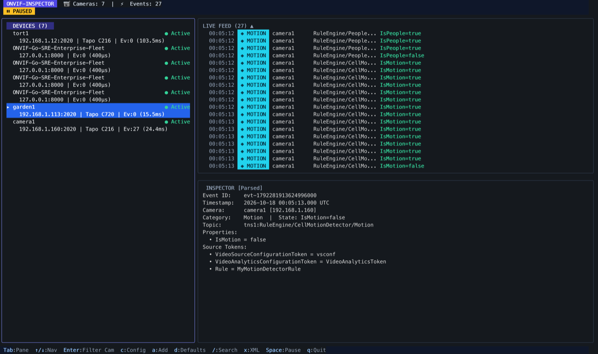
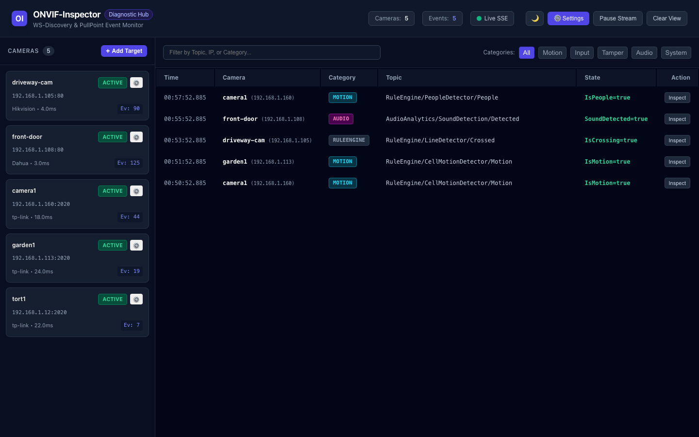

onvif-inspector
Real-time ONVIF IP camera event diagnostic utility and terminal inspector. Live event streaming, PullPoint subscriptions, XML payload inspector, and web dashboard.

Real-time ONVIF IP camera event diagnostic utility and terminal inspector. Live event streaming, PullPoint subscriptions, XML payload inspector, and web dashboard.
Run onvif-inspector in headless web mode with host networking for local WS-Discovery:
Precompiled static binaries with zero external runtime dependencies:
| Platform | Architecture | Download Link |
|---|---|---|
| Linux | amd64 (x86_64) | onvif-inspector_1.0.0_linux_amd64.tar.gz |
| Linux | arm64 (aarch64 / RPi) | onvif-inspector_1.0.0_linux_arm64.tar.gz |
| macOS | Apple Silicon (arm64) | onvif-inspector_1.0.0_darwin_arm64.tar.gz |
| macOS | Intel (amd64) | onvif-inspector_1.0.0_darwin_amd64.tar.gz |
Real-time 3-pane Bubble Tea & Lip Gloss terminal interface featuring live camera discovery, categorized event streaming, per-camera filtering, and parsed property inspector.

Responsive web interface with Server-Sent Events (SSE), category pills, dark & light theme toggle, in-browser credential configuration, and raw SOAP payload inspection.

Interactive terminal UI displaying live cameras, event logs, camera filtering, and parsed property inspection.
Real-time SSE event streaming, dark/light themes, camera naming, credential management, and raw SOAP payload modal.
Automatic camera discovery across subnets, clock drift synchronization, and WS-UsernameToken digest authentication.
Fault-tolerant PullPoint long-polling subscriptions with automatic renewal and push webhook fallback support.
# Automatic discovery & TUI
onvif-inspector -u admin -p mysecretpassword
# Direct target connection bypasses discovery
onvif-inspector -target 192.168.1.100:2020 -u admin -p mysecretpassword
# Concurrently run TUI and web dashboard on port 8080
onvif-inspector -web -web-port 8080
# Headless mode streaming JSON events to stdout
onvif-inspector -headless -format json